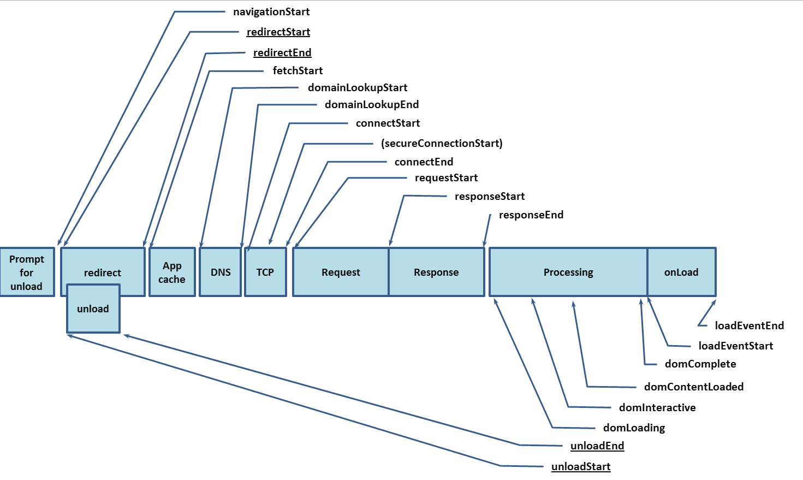

# 性能监控
# 前言
本人平时学习及收集内容，欢迎参入一起讨论。
# 内容
# 一、性能概念
- 白屏时间： 用户从打开页面开始到页面开始有东西呈现为止，这过程占用时间就是白屏时间
- 首屏时间： 用户浏览器首屏内所有内容都呈现出来所花费的时间
- 用户可操作时间： 用户可以进行正常的点击、输入等操作
- 页面总下载时间： 页面所有资源都加载完成并呈现出来所花的时间，即页面 onload 的时间
- 自定义的时间点： 对于开发人员来说，完全可以自定义一些时间点，例如：某个组件
init完成的时间、某个重要模块加载的时间等等。
# 二、performance 数据

var performance = {
// memory 是非标准属性，只在 Chrome 有
// 财富问题：我有多少内存
memory: {
usedJSHeapSize: 16100000, // JS 对象（包括V8引擎内部对象）占用的内存，一定小于 totalJSHeapSize
totalJSHeapSize: 35100000, // 可使用的内存
jsHeapSizeLimit: 793000000 // 内存大小限制
},
// 哲学问题：我从哪里来？
navigation: {
redirectCount: 0, // 如果有重定向的话，页面通过几次重定向跳转而来
type: 0 // 0 即 TYPE_NAVIGATENEXT 正常进入的页面（非刷新、非重定向等）
// 1 即 TYPE_RELOAD 通过 window.location.reload() 刷新的页面
// 2 即 TYPE_BACK_FORWARD 通过浏览器的前进后退按钮进入的页面（历史记录）
// 255 即 TYPE_UNDEFINED 非以上方式进入的页面
},
timing: {
// 在同一个浏览器上下文中，前一个网页（与当前页面不一定同域）unload 的时间戳，如果无前一个网页 unload ，则与 fetchStart 值相等
navigationStart: 1441112691935,
// 前一个网页（与当前页面同域）unload 的时间戳，如果无前一个网页 unload 或者前一个网页与当前页面不同域，则值为 0
unloadEventStart: 0,
// 和 unloadEventStart 相对应，返回前一个网页 unload 事件绑定的回调函数执行完毕的时间戳
unloadEventEnd: 0,
// 第一个 HTTP 重定向发生时的时间。有跳转且是同域名内的重定向才算，否则值为 0
redirectStart: 0,
// 最后一个 HTTP 重定向完成时的时间。有跳转且是同域名内部的重定向才算，否则值为 0
redirectEnd: 0,
// 浏览器准备好使用 HTTP 请求抓取文档的时间，这发生在检查本地缓存之前
fetchStart: 1441112692155,
// DNS 域名查询开始的时间，如果使用了本地缓存（即无 DNS 查询）或持久连接，则与 fetchStart 值相等
domainLookupStart: 1441112692155,
// DNS 域名查询完成的时间，如果使用了本地缓存（即无 DNS 查询）或持久连接，则与 fetchStart 值相等
domainLookupEnd: 1441112692155,
// HTTP（TCP） 开始建立连接的时间，如果是持久连接，则与 fetchStart 值相等
// 注意如果在传输层发生了错误且重新建立连接，则这里显示的是新建立的连接开始的时间
connectStart: 1441112692155,
// HTTP（TCP） 完成建立连接的时间（完成握手），如果是持久连接，则与 fetchStart 值相等
// 注意如果在传输层发生了错误且重新建立连接，则这里显示的是新建立的连接完成的时间
// 注意这里握手结束，包括安全连接建立完成、SOCKS 授权通过
connectEnd: 1441112692155,
// HTTPS 连接开始的时间，如果不是安全连接，则值为 0
secureConnectionStart: 0,
// HTTP 请求读取真实文档开始的时间（完成建立连接），包括从本地读取缓存
// 连接错误重连时，这里显示的也是新建立连接的时间
requestStart: 1441112692158,
// HTTP 开始接收响应的时间（获取到第一个字节），包括从本地读取缓存
responseStart: 1441112692686,
// HTTP 响应全部接收完成的时间（获取到最后一个字节），包括从本地读取缓存
responseEnd: 1441112692687,
// 开始解析渲染 DOM 树的时间，此时 Document.readyState 变为 loading，并将抛出 readystatechange 相关事件
domLoading: 1441112692690,
// 完成解析 DOM 树的时间，Document.readyState 变为 interactive，并将抛出 readystatechange 相关事件
// 注意只是 DOM 树解析完成，这时候并没有开始加载网页内的资源
domInteractive: 1441112693093,
// DOM 解析完成后，网页内资源加载开始的时间
// 在 DOMContentLoaded 事件抛出前发生
domContentLoadedEventStart: 1441112693093,
// DOM 解析完成后，网页内资源加载完成的时间（如 JS 脚本加载执行完毕）
domContentLoadedEventEnd: 1441112693101,
// DOM 树解析完成，且资源也准备就绪的时间，Document.readyState 变为 complete，并将抛出 readystatechange 相关事件
domComplete: 1441112693214,
// load 事件发送给文档，也即 load 回调函数开始执行的时间
// 注意如果没有绑定 load 事件，值为 0
loadEventStart: 1441112693214,
// load 事件的回调函数执行完毕的时间
loadEventEnd: 1441112693215
// 字母顺序
// connectEnd: 1441112692155,
// connectStart: 1441112692155,
// domComplete: 1441112693214,
// domContentLoadedEventEnd: 1441112693101,
// domContentLoadedEventStart: 1441112693093,
// domInteractive: 1441112693093,
// domLoading: 1441112692690,
// domainLookupEnd: 1441112692155,
// domainLookupStart: 1441112692155,
// fetchStart: 1441112692155,
// loadEventEnd: 1441112693215,
// loadEventStart: 1441112693214,
// navigationStart: 1441112691935,
// redirectEnd: 0,
// redirectStart: 0,
// requestStart: 1441112692158,
// responseEnd: 1441112692687,
// responseStart: 1441112692686,
// secureConnectionStart: 0,
// unloadEventEnd: 0,
// unloadEventStart: 0
}
};
1
2
3
4
5
6
7
8
9
10
11
12
13
14
15
16
17
18
19
20
21
22
23
24
25
26
27
28
29
30
31
32
33
34
35
36
37
38
39
40
41
42
43
44
45
46
47
48
49
50
51
52
53
54
55
56
57
58
59
60
61
62
63
64
65
66
67
68
69
70
71
72
73
74
75
76
77
78
79
80
81
82
83
84
85
86
87
88
89
90
91
92
93
94
95
96
97
98
99
100
101
102
103
104
105
106
107
108
109
110
111
112
113
2
3
4
5
6
7
8
9
10
11
12
13
14
15
16
17
18
19
20
21
22
23
24
25
26
27
28
29
30
31
32
33
34
35
36
37
38
39
40
41
42
43
44
45
46
47
48
49
50
51
52
53
54
55
56
57
58
59
60
61
62
63
64
65
66
67
68
69
70
71
72
73
74
75
76
77
78
79
80
81
82
83
84
85
86
87
88
89
90
91
92
93
94
95
96
97
98
99
100
101
102
103
104
105
106
107
108
109
110
111
112
113
# 三、performance.timing 信息计算出网页性能数据
可以使用Navigation.timing统计到的时间数据来计算一些页面性能指标，比如 DNS 查询耗时、白屏时间、domready等等。如下：
- DNS 查询耗时 =
domainLookupEnd-domainLookupStart - TCP 链接耗时 =
connectEnd-connectStart - request 请求耗时 =
responseEnd-responseStart - 解析 dom 树耗时 =
domComplete-domInteractive - 白屏时间 =
domloadng-fetchStart - domready 时间 =
domContentLoadedEventEnd-fetchStart - onload 时间 =
loadEventEnd-fetchStart
// 计算加载时间
function getPerformanceTiming () {
var performance = window.performance;
if (!performance) {
// 当前浏览器不支持
console.log('你的浏览器不支持 performance 接口');
return;
}
var t = performance.timing;
var times = {};
//【重要】页面加载完成的时间
//【原因】这几乎代表了用户等待页面可用的时间
times.loadPage = t.loadEventEnd - t.navigationStart;
//【重要】解析 DOM 树结构的时间
//【原因】反省下你的 DOM 树嵌套是不是太多了！
times.domReady = t.domComplete - t.responseEnd;
//【重要】重定向的时间
//【原因】拒绝重定向！比如，http://example.com/ 就不该写成 http://example.com
times.redirect = t.redirectEnd - t.redirectStart;
//【重要】DNS 查询时间
//【原因】DNS 预加载做了么？页面内是不是使用了太多不同的域名导致域名查询的时间太长？
// 可使用 HTML5 Prefetch 预查询 DNS ，见：[HTML5 prefetch](http://segmentfault.com/a/1190000000633364)
times.lookupDomain = t.domainLookupEnd - t.domainLookupStart;
//【重要】读取页面第一个字节的时间
//【原因】这可以理解为用户拿到你的资源占用的时间，加异地机房了么，加CDN 处理了么？加带宽了么？加 CPU 运算速度了么？
// TTFB 即 Time To First Byte 的意思
// 维基百科：https://en.wikipedia.org/wiki/Time_To_First_Byte
times.ttfb = t.responseStart - t.navigationStart;
//【重要】内容加载完成的时间
//【原因】页面内容经过 gzip 压缩了么，静态资源 css/js 等压缩了么？
times.request = t.responseEnd - t.requestStart;
//【重要】执行 onload 回调函数的时间
//【原因】是否太多不必要的操作都放到 onload 回调函数里执行了，考虑过延迟加载、按需加载的策略么？
times.loadEvent = t.loadEventEnd - t.loadEventStart;
// DNS 缓存时间
times.appcache = t.domainLookupStart - t.fetchStart;
// 卸载页面的时间
times.unloadEvent = t.unloadEventEnd - t.unloadEventStart;
// TCP 建立连接完成握手的时间
times.connect = t.connectEnd - t.connectStart;
return times;
}
1
2
3
4
5
6
7
8
9
10
11
12
13
14
15
16
17
18
19
20
21
22
23
24
25
26
27
28
29
30
31
32
33
34
35
36
37
38
39
40
41
42
43
44
45
46
47
48
49
50
51
52
53
54
55
2
3
4
5
6
7
8
9
10
11
12
13
14
15
16
17
18
19
20
21
22
23
24
25
26
27
28
29
30
31
32
33
34
35
36
37
38
39
40
41
42
43
44
45
46
47
48
49
50
51
52
53
54
55
# 参考资料
- 前端感官性能的衡量和优化实践
- 初探 performance – 监控网页与程序性能
- 前端性能——监控起步
- 前端性能监控
- 前端数据之美 -- 基础篇
- 同程艺龙小程序性能监控系统的探索与实践
- 如何进行 web 性能监控 ？
- 7 天打造前端性能监控系统
# 联系作者
平凡世界，贵在坚持。